Mathetraining mit Lehrwert - schlau.app
Wie die mobile Web-App ganz neue Wege erschließt, Mathe durch Training zu lernen und echtes Können zu erwerben - für bessere Noten, Prüfungen und Karriere
Die Mathe-App schlau.app bietet SchülerInnen der Mittelstufe im Unterricht und für das Lernen zuhause praktisches und lockeres Mathe-Training, für jeden Lernstand. Das Üben am eigenen Handy kommt bei einzelnen und Lerngruppen bestens an. Ebenso kann mit schlau.app - da es eine Web-App ist - am digitalen Whiteboard im Klassenraum gearbeitet werden.
Erfahren Sie auf dieser Seite, wie schlau.app das Mathelernen fördert! Wie die Mathe-App im Unterricht eingesetzt werden kann und wie das innovative Tool seiner Mission Mathetraining mit Lehrwert gerecht wird – und das im Einklang mit Rahmenvorgaben! Zunächst aus dem Rahmenlehrplan für Berlin und Brandenburg:
"Dem Üben und Vertiefen kommt im Fach Mathematik eine wichtige Rolle zu, um sicheres und vernetztes Wissen zu erhalten. Produktives Üben dient der Vertiefung von Einsichten, der Geläufigkeit und geistigen Beweglichkeit."
Hier setzt schlau.app an: durch Übung erhalten die Lernenden sicheres Wissen, im Sinne von gewinnen. Und genau diesen Gewinn bietet schlau.app: Mathe-Training mit Lehrwert.
Für den Einsatz in der Schule gibt es mehrere Szenarien und Workflows:
- Anzeige und Bedienung durch Schüler und Lehrer vor der Klasse, zum Beispiel an einem digitalen Whiteboard.
- Arbeiten in Teams, z.B. in Tischgruppen. An einem Tisch sind unterschiedliche Niveaus und unterschiedliche Lerntempi möglich!
- Individuelles Arbeiten der Lerngruppe, jeder/r für sich - mit Arbeitsaufträgen an der Tafel, per Zuruf oder auf einem Arbeitsblatt. [Beispiel]
- Fortgeschrittene Schüler*innen können am Whiteboard für Schwächere das Matheüben moderieren - und bei allen Aufgaben Lösungen, Hilfestellung und den Explainer als Lehrer-Tools nutzen.
- Ideal für Vertretungsstunden mit Nicht-Mathelehrern: für sie kann der Fachlehrer ein Arbeitsblatt erstellen.
- Analog sind für das Lernen zuhause und für Mathe-Nachhilfe mehrere Szenarien möglich!
- Digitaler Unterricht, Homeschooling: Online-Hausaufgaben z.B. via MS Teams können in wenigen Zeilen formuliert werden.
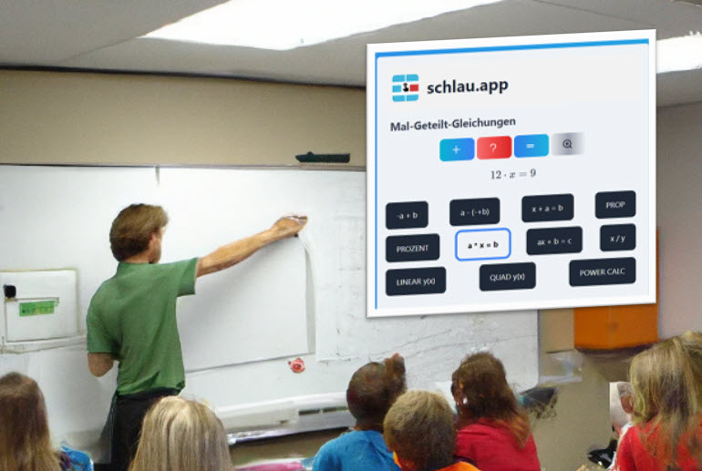
Technik: bei manchen legacy Smartboards (also Altgeräten) geht die Touch-Steuerung machmal nicht glatt. Hier sollte die App vom PC aus bedient werden. Auch hier bitte Chrome, Edge oder neuer Firefox, kein IE! Doch auch dann, wenn der PC-Browser alt ist, gibt es Abhilfe: schlau.app ist auch über die PC-Tastatur - z.B. alt + für neue Aufgabe - ansteuerbar. Für das flüssige Arbeiten mit der Klasse ist das allemal die professionelle Option.
Rechnen trainieren mit schlau.app - der Workflow
Die Benutzeroberfläche ist ganz auf einfaches Arbeiten ausgerichtet. Jeder kann sofort mit der Mathe-App produktiv werden - Schüler wie Lehrer, Eltern wie Nachhilfelehrer. Es gibt keine Texteingabe, nur 4 Buttons:
+ neue Aufgabe, ? Hilfe, = Ergebnis 🔍 Explainer.
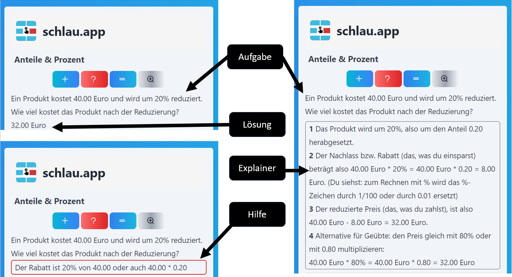
Aktuelle Aufgabentypen
Hier eine Auswahl von Mathethemen, die zurzeit implementiert sind (September 2023). Sie werden laufend weiterentwickelt. Z.B. sind zuletzt die Praxis-Anwendungen beim kleinen Einmaleins hinzugekommen: warum nicht das Einmaleins für Flächenberechnungen nutzen oder für den Stromverbrauch oder, um ein Kinderplanschbecken zu füllen?
Die Links führen zu schlau.app, wobei die betreffende Rechenart schon voreingestellt ist ("Deep Links"). So ist der direkte Einstieg in ein Thema möglich, ein Vorteil bei Online-Hausaufgaben oder Online-Arbeitsblättern.
+- EUR Kontostand, Ein- und Auszahlungen, neuer Kontostand. Geld (EUR, ct) gehört zu den Hauptgrößen (neben Länge und Zeit), bei denen laut Rahmenlehrplan mit Einheiten gerechnet werden sollte. (In Planung: Rechnen mit Euro und Cent, Wechselgeld, glatt wechseln sowie Zinsen) [Euro]
-a + b Plus und Minus auf dem Zahlenstrahl: das flüssige Rechnen mit positiven und negativen Zahlen ist absolut notwendig für praktisch alle Mathethemen der Mittelstufe. Ander als beim Rechnen in ℕ, wo auch Trivialaufgaben wie 12 + 13 mit dem Taschenrechner gelöst werden (leider!), nimmt bei Plus- und Minus-Summanden die Fehlerwahrscheinlichkeit auf dem Taschenrechner zu. Die Übung, das Rechnen mit plus und minus zu automatisieren (z.B.: - 12 - 13 =), ist für Mathe lebenswichtig. Übrigens ist bei dem Beispiel der Glaubenssatz "Minus und Minus gibt Plus" ein schwer ausrottbarer Schädling! Hier gilt: Üben hilft! Und beim Üben hilft wiederum das Zahlenstrahl-Modell, deshalb zieht es schlau.app im Explainer immer wieder heran. [add].
a -(-+b) Plus und Minus mit und ohne Klammern: hier kommen Klammern hinzu. Diese Aufgaben schriftlich bearbeiten und jeweils die Schritte sauber untereinander oder auch nebeneinander aufschreiben lassen:
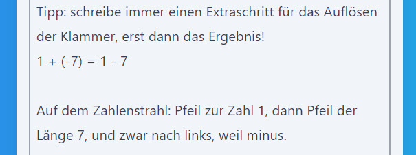
Die Aufgaben sind mit denen des ersten Typs gemischt, so dass abwechselnd Terme mit und ohne Klammer generiert werden. [addsub]
1 x EINS Das kleine Einmaleins. Die meisten Unterthemen sind als mündliche Aufgaben gedacht, außer den Aufgaben mit Dezimalbrüchen. Die Aufgaben mit Einheiten können ebenfalls schriftlich gemacht werden, um das richtige Mitnehmen von Einheiten auch visuell zu festigen.[times]
- "Plain Vanilla" - das eigentliche Einmaleins mit Faktoren von 2 bis 9. Hilfe: graphische Darstellung, Rechteck. Explainer mit Tricks, z.B. · 2, · 4, · 5, · 9
- 10 x 100, 100 x 1000. Einmaleins mit Zehnern, Hundertern, Tausendern. Hilfe und Explainer. Hilfe z.B. 60 · 200 = 6· 2 · 10 · 100 = ...
- 0,1 x 0,001. Einmaleins mit Dezimalbrüchen bis 0,001
- 1 x 1 mit negativen Faktoren (-5) · 3 - die 4 Fälle im Überblick
- Division mit Probe. Verschiedene Geteilt-Zeichen ":", "/", Bruchstrich
- Flächenberechnung: Meter, Quadratmeter
- Kinderplanschbecken füllen: Menge = Durchfluss mal Zeit
- Ohmsches Gesetz: Spannung = Strom · Widerstand
- Leistung = Spannung mal Strom
- Energie = Leistung mal Zeit
- In Kürze: Stromkosten = Energie mal Zeit
- Geplant: Multiplikation von 11 bis 19, Trick mit Hilfe des kleinen Einmaleins
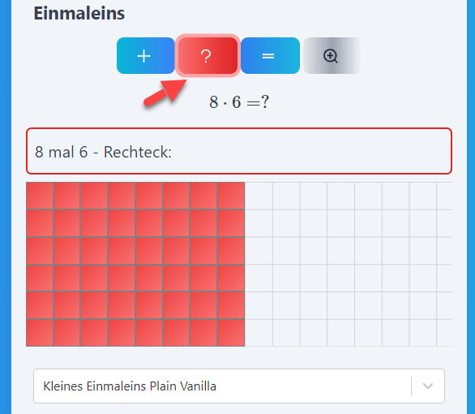
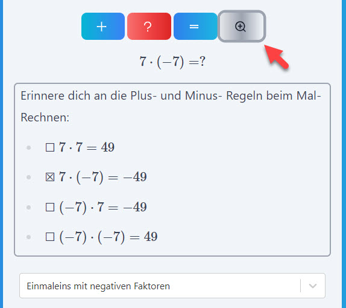
Die letzten drei Anwendungen (Strom, Spannung, Energie) zeigen, dass die Einmaleinsübungen auch für Spätberufene gestaltet sind, für Schüler-/innen im 9. oder 10. Jahrgang, die schon 2-3 Jahre Physik haben, aber leider nicht die einfachsten Rechnungen durchführen können.
x + a = b Plus-Minus-Umstellen, nach x auflösen. Dieser Rechenvorgang gehört wie die beiden o.a. Zahlenstrahl-Vorgänge zu den absoluten Basics und ist quasi deren Fortsetzung. Genau wie Plus-Minus-Rechnen mit Klammern sollten hier alle Schritte schriftlich gemacht werden. [lin1]
PROP Proportionalität und Dreisatz. Das Kernthema der Mittelstufe, s.u. wird in Praxisanwendungen durchgespielt. [prop]
- Döner, Burger, Pizza, Falafel: Basis-Dreisatz. "5 Hähnchen Wrap kosten 5.00 Euro, wieviel kosten 20 Hähnchen Wrap?"
- Reisen in Deutschland: Dreisatz mit Strecken und Fahrzeiten. "Von Bremen nach Münster sind es 172 km und die Fahrzeit mit PKW beträgt 2:07 Std. Wie lange würde, bei gleicher mittlerer Geschwindigkeit, die Fahrt von Berlin ins 316 km entfernte Köln dauern?"
- Doppelter Dreisatz: Arbeitsleistung. Fliesenlegen bis ESt-Bescheide ablegen.
- Backe-Backe-Kuchen: Rezepte nach Personenzahl skalieren.
- Ähnliche Rechtecke: Längen und Breiten umrechnen, Rechtecke skalieren.
- Das optimale Steigungsdreieck: Ähnlichkeit nutzen für Zeichengenauigkeit.
- Konstante Geschwindigkeit m/s, km/h. Takeaway: mit Geschwindigkeiten rechnen.
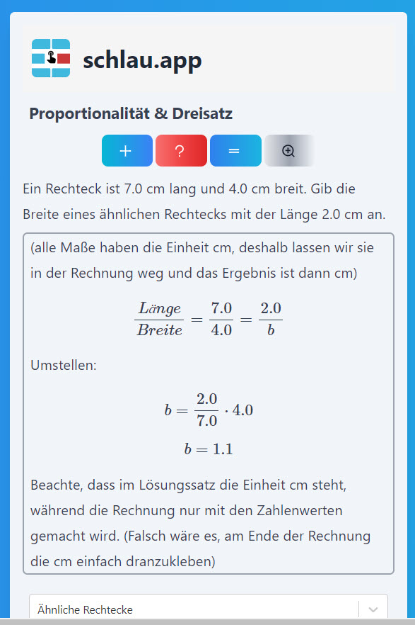
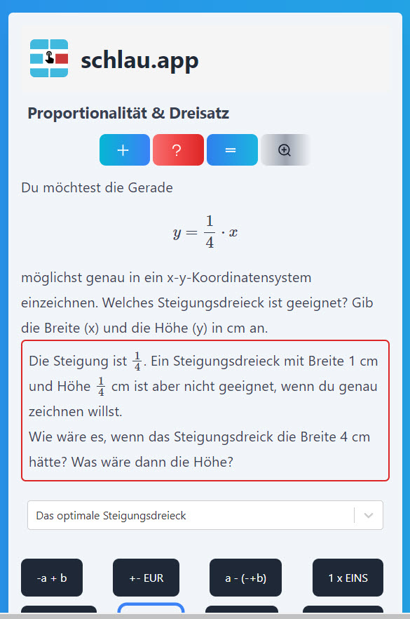
a · x = b Mal-Geteilt-Gleichungen, nach x auflösen. So wie das Thema Proportion-Anteil-Dreisatz, s.u., ein inhaltliches Kernthema der Mittelstufe ist, so sind die Umformungen vom Typ
a · x = b a / x = b x / a = b
eine Kern-Fähigkeit der Mittelstufe. Erstens müssen in weitere Mathe-Gebieten Terme umgestellt werden, und zwar additiv (plus-minus) und multiplikativ (mal-geteilt). Wenn das nicht sitzt, ist die Beschäftigung mit höheren Operationen wie Potenzen und Logarithmus eigentlich bizarr - und doch ist dieser Gegensatz oft Realität an unsere Mittelstufen.
Zweitens - und in der Praxis besonders wichtig: diese "Dreibuchstabengleichungen" sind das A und O in der Mittelstufen-Physik. Denn überall müssen lineare Terme umgestellt und lineare Gleichungen aufgelöst werden. Beispiel: [lin3]
Federkraft (typ. 8. Jahrgang): F = k · x
Ohmsches Gesetz (typ. 8. Jahrgang): U = I · R
Elektrische Leistung (typ. 8. Jahrgang): P = U · I
Gleichförmige Bewegung (typ. 9. Jahrgang): s = v · t
Konstante Beschleunigung (typ. 9. Jahrgang): v = a · t
Zweites Newtonsches Gesetz (typ. 9. Jahrgang): F = m · a
Energie und Leistung (typ. 10. Jahrgang): Epot = m · g · h und P = F · v
Diese ganze Vielfalt bleibt SchülerInnen, die nicht umformen können, verborgen. Sie können nur über diese Dinge "diskutieren" und irgendwelche "Kompetenzen" pflegen, doch sie können diese Physik nicht betreiben - oder nur so wie Heimat- und Sachkunde im 2. Jahrgang.
Das Trainieren mit schlau.app hilft, diesen Missstand zu beseitigen. Alle drei möglichen Gleichungen werden eingespielt, also x im Zähler oder Nenner und alles auch mit plus oder minus. Die genannten Praxisanwendungen in Physik sind Optionen beim Aufgabentyp kleines Einmaleins.
Mit diesem Aufgabentyp geht SchülerInnen das Auflösen von Dreibuchstaben-Gleichungen in Fleisch und Blut über. Lehrkräfte können die Beschäftigung mit diesem Umformen interdisziplinär anregen, durch diese praktischen Skills entsteht echter Bildungswert - der Lehrwert, den schlau.app verspricht.
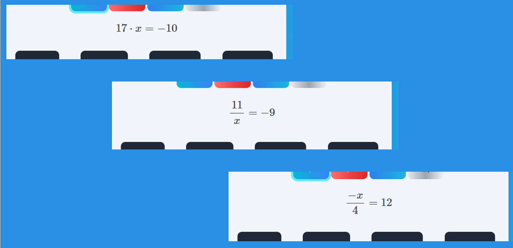
ax + b = c Lineare Gleichungen auflösen [lin2].
PROZENT [prozent].
- Einkommen, Vergleich mit Durchschnitt
- Stromverbrauch von Haushalten
- EU-Länder Budget für Bildung % ⇔ Euro pro Kopf
- Umsatzsteigerung / Unternehmensgröße
- Preis und Rabatt
LINEAR x(x) Rund um lineare Funktionen [linfunc].
QUAD y(x) Nullstellen quadratischer Funktionen. pq-Formel, quadratische Ergänzung[quad].
POTENZEN Potenzgesetze [potenzen].
- Multiplizieren, gleiche Basis
- Negative Exponenten
- Dividieren, gleiche Basis
- Multiplizieren, gleicher Exponent
- Kehrwerte
- Dividieren, gleicher Exponent
- Potenzen von Potenzen
Praxisbeispiel eines Unterrichts mit schlau.app
Der Einsatz von schlau.app im Unterricht erfordert keine Vorbereitungen. Es kann aber nützlich sein, einen Ablauf zu planen, etvl. ein Arbeitsblatt vorzubereiten und sich eine Reflexion der Trainigseinheit zu überlegen. Außerdem kann ein Follow-up, abhängig von Ergebnissen definiert werden.
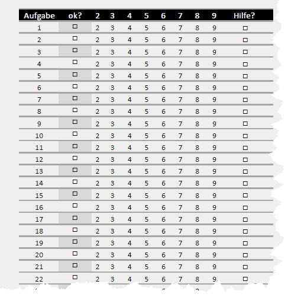
Ein Arbeitsblatt für einen Rechentyp von schlau.app kann so gestaltet werden, dass der Übebedarf auf einen Blick deutlich wird. Ein Arbeitsblatt mit Tabelle wurde in einer Stunde mit 24 Schülern bearbeitet, hier sind typische Ergebnisse:
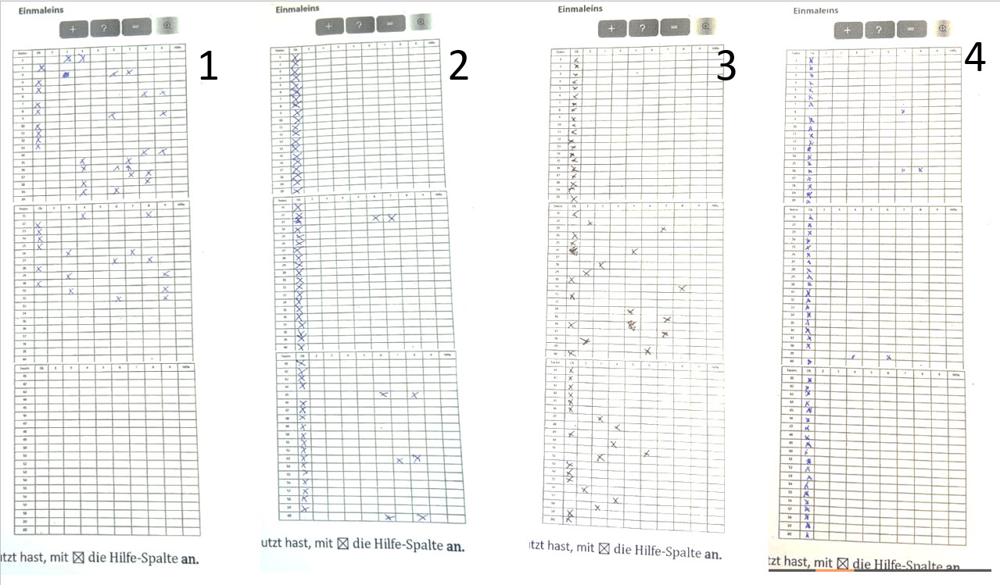
Die Ergebnisse sind qualitativ unterschiedlich
- Breitbandiger Bedarf, das Einmaleins muss komplett geübt werden.
- Fast perfekt: Übebedarf bei der 5er- und der 7er-Reihe.
- Ergebnisse über die Zeit inkonsistent: die Schülerin war offenbar zeitweise abgelenkt. Eine Wiederholung wäre aufschlussreich.
- Nur ganz wenig falsche Ergebnisse, der Rest sind Ausreißer, nicht signifikant.
Solche Durchgänge mit einer Rechenart liefern quantitative Ergebnisse wie auch Erfahrungen mit der betreffenden Lerngruppe. Beides kann bei Wiederholungen den Vorgang noch optimieren. Z.B.:
- Wir bekommen einen Momentaufnahme des Lernstands
- Durch den "Statistik-Effekt" können wir schneller als mit Punktebewertungen konventioneller Test einen Überblick gewinnen. Ein Korrigieren sollte hier entfallen, sondern der Test gibt Hinweise.
- Wir können für künftiges Üben und Testen mit schlau.app Gruppen einteilen mit unterschiedlichen Arbeitsanregungen, je nachdem, ob der Bedarf speziell oder breitbandig ist.
- Wenn alles gekonnt wurde, können wir zu den anderen Optionen des kleinen Einmaleins übergehen, z.B. mit Zehnern bis Tausendern oder mit Zehntel bis Tausendstel.
- Wir können Hinweise zur Konzentration geben (s.o. Nr. 3)
- Wir können in späteren Tests dieser Art bei Teilnehmern mit anfangs breitbandigem Bedarf mit einem Blick Fortschritte feststellen.
- Einige Schwächere können die Anleitung nicht selbständig umsetzen, verstehen es aber sofort, wenn man es ihnen vormacht.
- Hilfe wurde praktisch nie angekreuzt. Vermutlich werden Hilfe und Explainer seltener genutzt bei diesen Aufgabetypen. Möglicherweise ist das beim Einsatz im Unterricht so. Bei Tipps für das Training zuhause kann man auf diese Hilfen verweisen.
Insgesamt und auch bei anderen Rechentypen bietet dieses Vorgehen Schülern und Lehrern der Mittelstufe die Gelegenheit, Schwachstellen zu identifizieren und schrittweise auszumerzen, mit reproduzierbaren Ergebnissen. Damit werden auch größere Projekte als etwa das Einmaleins leichter zu bewältigen: die Aufgaben, die SchülerInnen beim Realschulabschluss, beim BBR oder MSA zu bewältigen haben.
BBR- und MSA-Aufgaben trainieren: von den Basics aus
Das Trainieren von Aufgaben, die in den Prüfungen zu erwarten sind, hat bei SchülerInnen höchste Priotät - auch im Verhältnis zu den anderen Erfolgsfaktoren wie Grundlagenwissen und Ruhe im Klassenraum, das ergab eine Umfrage am Ende der 9. Klasse. Das Ergebnis ist, auch wenn die Schüler-Intuition zu diesem Zeitpunkt noch etwas naiv ist, vernünftig. Im Gegenteil wäre es naiv zu glauben, dass man nur den Stoff lernen muss und dann würden die Prüfungen erfolgreich sein.
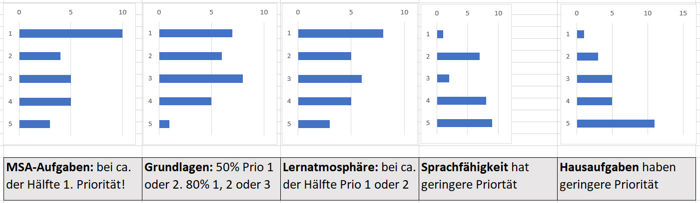
Alle Fakultäten, egal, ob Mediziner, Juristen oder Physiker trainieren direkt die Prüfungssituation. Doch wie sieht das effektivste Training aus im Bereich der schwächeren Schüler, die im Grunde überhaupt nicht auf dem Niveau des Lehrplans sind, aber für die man sich doch mindestens ein "Ausreichend" wünscht?
Praxis ist häufig, möglichst viele Aufgaben mit der Klasse durchzurechnen. Dabei kann es aber vorkommen, dass Schwierigkeiten einzelner, für allem Schwächerer, übersehen werden. Vor allem, weil diese Klientel weniger dazu neigt, auf der Sachebene Fragen zu stellen und Aufklärung einzufordern, wo etwas unklar ist. Das ist auch verständlich, denn einem Teil der Klasse - in Integrierten Sekundarschulen jedenfalls - ist das meiste unklar, der Faden ist weg.
Hier ein Beispiel, wie wir schlau.app einsetzen können, um den Wissenszuwachs beim Trainieren von komplexeren Aufgaben zu steigern und das Erreichte zu festigen, wobei es wieder um die schwächeren SchülerInnen gehen soll: Auflösung linearer Gleichungssysteme, Stoff häufig im 9. Jahrgang. Die typischen Klippen:
- Gleichsetzungs-, Additions- oder Einsetzungsverfahren anwenden (teils auch die Auswahl treffen).
- Für x oder y die Variablenterme und die Zahlen auseinanderhalten und sortieren.
- Terme zusammenfassen
- Als letzten Schritt noch "mal-geteilt" rechnen, z.B. 3x = -6
- Der Ergebnisbruch wäre noch zu kürzen
Die Schwächeren sind meist in der Lage, das Gleichsetzungsverfahren anzuwenden, also den ersten Schritt zu meistern. Aber in den folgenden Schritten, wo es ums Terme-Umstellen und Ausrechnen geht, vertun sie sich, zumal unter Prüfungsstress. Hier hilft das systematische Trainieren mit der Mathe-App:
- x + a = b ist zuständig für das Umstellen. Denn es werden alle Vorzeichenfälle geübt. Kein Stress mit etwas wie -x + 3 = -5!
- a - (-+ b) sichert das Zusammenrechnen der gleichartigen Terme.
- a · x = b übt den letzten Schritt ein, auch mit Real-Life-Aufgaben wie dem Verteilen von Döner und Falaffel.
- x / y erinnert an das Brüche Kürzen, damit nicht ein Ergebnis wie 6/3 stehen bleibt.
Diese Anregungen erscheinen manchem trivial. Doch in der Lebenswirklichkeit das Matheunterrichts kommt es schon vor, dass Themen trainiert werden, ohne dass die eigentlichen Knackpunkte identifiziert werden. So könnte die Beurteilung eines Misserfolgs sein: "Nun ja, lineare Gleichungssysteme sind schon recht abstrakt". In Wirklichkeit müssen aber keine "abstrakten" (etwa: wenig anschauliche) Aufgaben gelöst werden, sondern es stehen einfach zwei kleine Gleichungen da, vom Typ her seit mehr als einem Jahr bekannt. Der Misserfolg, das vermeintliche "zu schwer", kommt dann einzig daher, dass Gundlagen nicht da sind. Es ist so, wie wenn einer beim Turnen immer wieder die Übung am Schwebebalken vermasselt - bis sich herausstellt, dass er schon auf dem Boden nicht laufen kann!
Für die Schwächeren ist es also unbedingt zu empfehlen, diese Grundlagen separat üben. Das Schöne mit schlau.app ist ja, dass sie dies auch separat im Klassenraum tun können: während die in Mathe Fitten sich z.B. mit der geometrischen Darstellung verschiedener Fälle beschäftigen, können die Schwächeren mit dem Handy an ihren Grundlagen-Defiziten arbeiten.

Proportionen, Kernthema der Mittelstufe: Training und Lehrwert mit schlau.app
Die Themen der Mittelstufe werden im Rahmenlehrplan durchaus im Hinblick auf die Verwertbarkeit im Leben vorgestellt. In der Wirklichkeit des Matheunterricht kann aber, gerade durch bemühte Umsetzung des Lehrplans, der Blick aufs Ganze verloren gehen. Ein Überthema der Mittelstufe ist die Proportion, der Anteil, das Verhältnis. In vielen Mathethemen im Lauf der Jahrgänge 7 bis 10 geht es darum, zu verstehen, was Proportionen sind, z.B. Dreisatz, Proportionale Zuordnungen, Strahlensatz, Bruchrechnung, Prozentrechnung, Steigungsdreieck. Wie wäre es, wenn SchülerInnen ein intuitives Verhältnis dafür entwickeln können, was Anteile sind und wo auch immer in der Lebenswirklichkeit es um Anteile geht? Ein solches Verständnis wird von Rahmenlehrplänen immer wieder eingefordert:
"Der Mathematikunterricht befähigt die Schülerinnen und Schüler, ausgehend von ihren mathematischen Vorerfahrungen Zusammenhänge zu erkunden, Strukturen zu untersuchen, Beziehungen zwischen Begriffen aufzudecken, Vorgehensweisen und Darstellungsformen zu finden und begründet auszuwählen."
Doch wie lernen SchülerInnen, "Beziehungen aufzudecken?". Aus eigener Kraft ist das schwer möglich.
- Beispiel Strahlensatz: wer checkt schon, dass hinter dem mystischen Gebilde ZA'/ZA eine Zahl steckt, eben eine Proportion, ein Verhältnis aus Strecken, die angegeben sind, oder, die man messen kann? Auch, dass diese Zahl ein Bruch ist, den man auf dem Taschenrechner in eine "richtige" Zahl verwandeln kann, bleibt im Nebel.
- Beispiel Steigungsdreieck: wer checkt schon, dass das Mysterium Steigungsdreick viel mit früherem Lernstoff der Mittelstufe zu tun hat, wie Ähnlichkeit und auch wieder Strahlensatz?
Diese Einsichten zu erklären, ist tägliches Brot der Mathematiklehrer in der Mittelstufe und sie sind auch versiert darin.
schlau.app kann hier Hilfestellung leisten mit dem Ansatz, die Einsichten auch einzuüben. Der Themenkomplex "Anteil - Verhältnis" kommt - sozusagen interdisziplinär - in verschiedenen Aufgabentypen von schlau.app vor, s.o. die Themen unter PROP und PROZENT
Hier bekommen SchülerInnen durch eigenes Tun ein Gefühl dafür, dass Einkommensvergleiche und Stromverbrauch-Rechnungen die gleiche Mathe-Basis haben, oder Vergleiche von ICE-Fahrstrecken mathematisch mit dem Kuchenbacken und mit der Konstruktion eines Steigungsdreiecks zusammenhängen.
Sprache im Mathematikunterricht: was kann eine Mathe-App beitragen?
"Kinder mit Schwierigkeiten im Rechnen können zwar oft mithilfe von konkreten Materialen eine Handlung durchführen, diese jedoch nicht beschreiben."
Besonders in der Mittelstufe, wo qualitativ neue Einsichten vermittelt werden sollen (z.B. von Zahlen und Operationen zu Verhältnissen und Funktionen), müsste auch die Sprache sich entwickeln. Doch leider passiert das in manchen schulischen Umfeldern nicht. So haben Grundkurse in sozial und ethnisch vielfältigen Klassen, etwa in Integrierten Sekundarschulen, schon bei ganz grundlegender Kommunikation ihre Herausforderungen. Wie kann sich da Fachsprache entwickeln?
Es fehlen also häufig Grundlagen, wie mehrfach angesprochen, und die Kommunikation gelingt auch nicht. Die Schere zwischen Ist und Soll (vom Lehrplan her gesehen) geht bei diesen Lernumfeldern immer weiter auf.
"Kinder mit Schwierigkeiten im Rechnen können zwar oft mithilfe von konkreten Materialen eine Handlung durchführen, diese jedoch nicht beschreiben."
Und es geht bei Kommunikation nicht nur darum, sich durch Sprache Zusammenhänge besser einprägen zu können. Sondern Sprachbeherrschung hat viel mit Selbstbehauptung zu tun. SchülerInnen, die kein Wort herausbringen, sind oft wenig selbstbehauptet und das ist das Eigentliche, das ihrer schulischen Entwicklung entgegensteht, die Sprache ist nur ein Symptom.
Mit diesem Verständnis bietet sich aber in der Sprachentwicklung - ganz niederschwellig - eine besondere Chance für den Mathunterricht: wenn es gelingt, minimale Rechenkenntnisse (im Vergleich zum Mittelstufen-Soll) zu fördern und gleichzeitig die minimale Sprachfähigkeit zu steigern, dann addieren sich die zwei Energien, die das Lernen des eigentlichen Mathestoffs steigern. Mehr noch, es gibt eine Synergie verschiedener Quellen: Selbstsicherheit, mehr Spaß in der Stunde, mehr Sicherheit und Routine. Fremd- und Selbstbild leuchten heller.
Ein Mittel im Unterricht um niederschwellig Sprache hervorzulocken, sind "Blitzpräsentationen": SchülerInnen präsentieren ein wirklich minimales "Thema", z.B. nur eine Umstellungen einer Gleichung, ein schlauer Rechenschritt etc. Trotz der Winzigkeit des Sachverhalts ist die Präsentation ein richtiger Vortrag mit Einleitung und Conclusion. Worauf es - sprachlich - ankommt, ist, Kernaussagen in ganzen Sätzen zu übermitteln! Es ist eigentlich ein Trick, denn die größere Herausforderung ist das Vortragen vor der Klasse. Die sprachliche Übung ist ein Takeaway.
In diesen Zusammenhang fügt sich jetzt auch schlau.app ein: viele grundlegende Rechenaufgaben, geben die Gelegenheit her, auch das "ganze Sätze sprechen" zu trainiern.
Bisher sind die sprachlichen Features nur in kleinem Umfang in schlau.app implementiert, aber einfache Technik bietet ein sehr großes Potential.
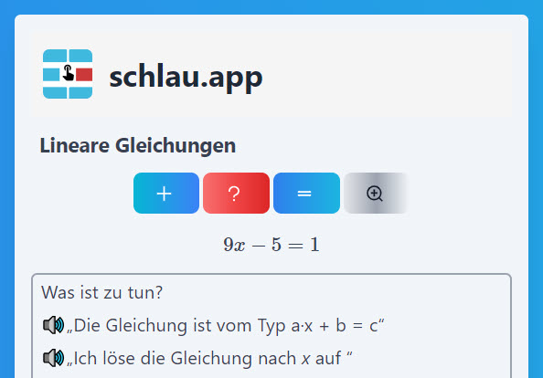
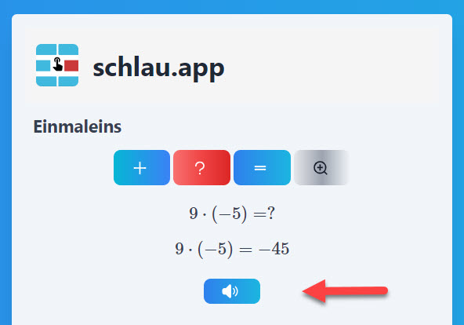
Im einen Fall werden Modellsätze zum Sprechen empfohlen. Im Unterricht könnte dies die Lehrkraft verstärken oder als Anregung für eine Diskussion nehmen. Im anderen Fall ist die Sprache direkt per Button abrufbar. Vorerst wird immer nur ein Kernsatz ausgewählt. Im Beispiel spricht eine Frauenstimme: "neun mal minus fünf gleich minus fünfundvierzig"
Wie wird der Unterricht mit schlau.app dem Rahmenlehrplan gerecht?
In der Themenvielfalt von schlau.app werden viele Anforderungen des Rahmenlehrplan Teil C von Berlin und Brandenburg aufgenommen, umgesetzt und unterstützt. Vor allem durch die Explainer der Aufgaben. Auf die recht ausführlichen Texte des RLP möchten wir hier nur die Punkte nennen, die durch schlau.app genau genau getroffen werden.
- "Flexibles automatisiertes Lösen der Aufgaben des kleinen 1x1": ✓ was immer flexibel hier heißt, diese Kernanforderung wir von schlau.app perfekt aufgenommen, vor allem durch die Varianten mit 10, 100 etc. und die Real-World-Varianten (z.B. Flächen berechnen).
- "Situationsangemessenes Verwenden der Einheiten ... (Länge, Zeit, Geld)": ✓ diese Anwendungen der Grundrechenarten (im Unterricht oft übersehen) kommen systematisch in schlau.app vor
- " .... dito in Sachkontexten": ✓ das wird in der App facettenreich gestaltet.
- Darstellen von Sachverhalten (auch innermathematische) durch Terme und Gleichungen (auch mit mehreren Rechenoperationen). ✓
- Beschreiben und Interpretieren von linearen Zusammenhängen und ihrer Darstellungen in Alltagssituationen
"Ausgehend von den Rechengesetzen für Zahlen entwickeln die Schülerinnen und Schüler ein Verständnis für das Operieren mit Variablen": diese Anforderung kann fast als Leitgedanke für schlau.app aufgefasst werden: um die Themen der Mittelstufe zu verstehen, und es geht um Variablen, müssen Grundfertigkeiten wie Grundrechenarten, Kopfrechnen, Terme umstellen wirklich gekonnt werden. Dieses echte Können, vorm Lehrplan auch explizit gefordert, kann aber paradoxerweise gerade wegen des Lehrplans - nämlich wegen zu starker Lehrplanfixierung im Unterricht - verhindert werden! Hier leistet schlau.app unschätzbare Vermittlungsdienste! Etwas spitz könnte man sagen: die Mathe-App vermitteln zwischen echtem Können, das man im Leben verwendet und den berühmten Kompetenzen, um die es in Lehrplänen geht. Können braucht Übung und schlau.app konzentriert sich auf die Kernthemen, die, wenn sie gekonnt werden, die ganze Vielfalt, die in Lehrplänen aufgeschrieben wird, erschließen.